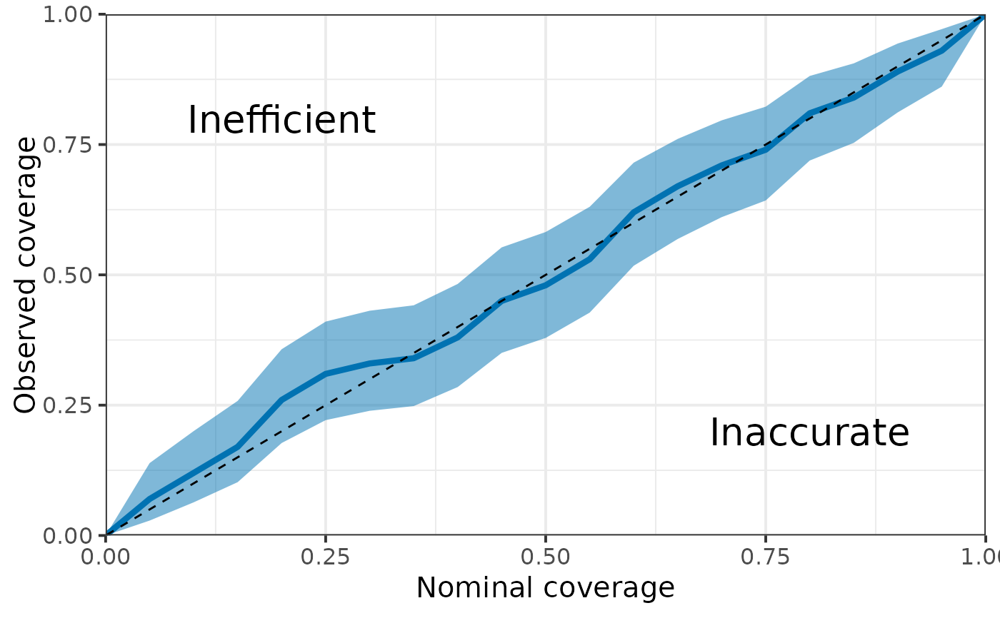

Compute and plot coverage of CI for different confidence level. Useful for fake data check.
Arguments
- post_samples
Matrix of posterior samples. Rows represent a sample and columns represent variables.
- truth
Vector of true parameter values (should be the same length as the number of columns in
post_samples).- CI
Vector of confidence levels.
- type
Type of confidence intervals: either "eti" (equal-tailed intervals) or "hdi" (highest density intervals).
Value
compute_coverage returns a Dataframe containing coverage (and 95% uncertainty interval for the coverage) for different confidence level (nominal coverage).
plot_coverage returns a ggplot of the coverage as the function of the nominal coverage with 95% uncertainty interval.
Examples
N <- 100
N_post <- 1e3
truth <- rep(0, N)
post_samples <- sapply(rnorm(N, 0, 1), function(x) {
rnorm(N_post, x, 1)
})
compute_coverage(post_samples, truth)
#> # A tibble: 21 × 4
#> Nominal Coverage Lower Upper
#> <dbl> <dbl> <dbl> <dbl>
#> 1 0 0 0 0
#> 2 0.05 0.04 0.0110 0.0993
#> 3 0.1 0.09 0.0420 0.164
#> 4 0.15 0.17 0.102 0.258
#> 5 0.2 0.22 0.143 0.314
#> 6 0.25 0.3 0.212 0.400
#> 7 0.3 0.32 0.230 0.421
#> 8 0.35 0.38 0.285 0.483
#> 9 0.4 0.42 0.322 0.523
#> 10 0.45 0.49 0.389 0.592
#> # ℹ 11 more rows
plot_coverage(post_samples, truth)
